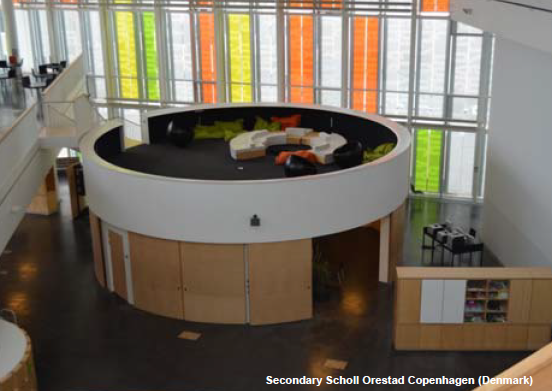

Amióta az információ digitális forradalma berobbant, a tanulás sem az már, mint régen volt. Az IKT-eszközök tanuláshoz való alkalmazása egyébként is mássá tette a hagyományos osztályképet, még akkor is, ha kissé disszonánsan hatott egymás mellett az évszázados „tojástartó” osztálykép és a modern számítógép egymás mellett. Nemcsak esztétikai kérdésről van azonban itt szó, hanem arról is, hogy a digitális transzformáció az információ- és a tanulás olyan mértékben módosította, amelyhez aktualizált térbeli megoldásokra van szükség. A tartalomfogyasztó tanulás mellett megjelent a tartalom-előállító tanulás, mely új készségeket és kompetenciák fejlesztését teszi szükségessé modern eszközök segítségével az újgenerációs tanulási térben. Brown és Long (2006) azt is kiemeli, hogy a sablonszerűen épített iskolák, tantermek valójában semelyik diák vagy közösség tanulási igényeit sem tudják megfelelően kiszolgálni. Ezzel szemben az újgenerációs tanulási tereknél pont az a lényeg, hogy konkrét közösség konkrét pedagógiai igényei számára kerül kialakításra. Ennek érdekében az ún. épületinformációs modellezés3 módszerével dolgoznak a szakemberek a tanulási terek kialakításán: az építész konzultál a tanárokkal, könyvtárosokkal, pedagógiai szakértőkkel, hogy optimalizálja és hozzá tudja igazítani a tanulási teret az elvárásokhoz és az igényekhez.
A tanulás globális jellegű lett, bárhol és bármikor tanulhatunk, egyénileg, csoportban, direkt és indirekt. Az informális tanulás helyszínei nagyon változatosak: kávéház, számítógépes laboratórium, vagy épp egy fa tövében. A tanulás körülményeinek fizikai jellemzői emocionálisan hatnak a tanulóra, jelentős kognitív és viselkedési következményekkel. A tanulók többsége például valószínűleg kevésbé tartja vonzónak egy fullasztóan meleg osztályteremben való tanulást. Ugyanakkor a pozitív emocionális reakciót kiváltó tanulási terek nem csupán javítják a tanulási teljesítményt, hanem erős érzelmi kapcsolódást is kialakíthatnak az ott tanulókkal. Az ilyen helyszínek a tanuló kedvenc tanulási helyévé válhatnak, amit szívesen látogat tanulás céljából (Graetz 2006).
Napjaink tanulói más attitűdökkel, kompetenciákkal és elvárásokkal rendelkeznek, mint akár 10 évvel ezelőtt. Könnyen belátható, hogy az évtizedekkel ezelőtti igényeknek megfeleltetett hagyományos osztálytermek csak korlátozottan tudnak mindezeket kiszolgálni, egyszerűen azért, mert a mai tanulók szokásai, viselkedése nem illeszkedik a körülöttük lévő tanulási térhez (Oblinger 2006). Ehhez egy olyan újgenerációs tanulási térre van szükség, amely mindezt az igényt megfelelően támogatni tudja. A térkialakítás módját a tanulási térdesign szolgáltatja, amely nem csak esztétikumon, hanem sokkal inkább tudományos eredményeken alapuló térrendezés. Itt a design nem csupán praktikus okok mentén került kialakításra, hanem azt is megmutatja, hogyan vélekedünk magáról a tanulásról.
Nancy Van Note Chism (2006) tanulmányában arra hívja fel a figyelmet, hogy a tanulási terek megkonstruálásánál jelentős mértékű megszokás és előítélet érhető tetten a mindennapokban. Egy munkatársával közös kutatásban az alábbi listában összegezték ezeket (Chism –Bickford 2002):
- A tanulás helyszíne csak egy tanterem lehet.
- A tanulás csak kötött időpontokban történhet.
- A tanulás egy egyéni tevékenység.
- Mindig ugyanaz történik egy osztályteremben minden nap, minden osztályban.
- Egy osztályteremnek mindig van eleje (és hátulja).
- A tanuláshoz elvonulás, valamint a zavaró körülmények elhárítása szükséges.
- Egy tanterem flexibilitása azt jelenti, hogy annyi szék betehető, amennyi csak befér.
- A felsőoktatási hallgatók mind fiatalok:
- Tönkre fogják tenni vagy el fogják lopni a drága bútorzatot.
- Ahhoz, hogy diákoknak érezzék magukat, csupán egy tablet/laptoptartóval ellátott fotelre, kényelmes székre van szükségük
- Vékonyak, fiatalok és hajlékonyak, testi fogyatékosság nélkül
- Hangerősítés csak a nagy előadótermekben szükséges, hogy az előadót jól lehessen hallani.
Strange és Banning tanulmányában kimutatta, hogy a felsőoktatási hallgatók számára nonverbális üzenetként kódolódik az egyetemi épület fizikai jellege, amely minden verbális információnál erőteljesebb benyomást kelt. Összefüggést találtak továbbá a fizikai attraktivitás és a természetes fénnyel bevilágított terek, valamint a tanulási motiváció és a teljesítmény között. Graetz és Goliber (2002) pedig arra jutott, hogy a túlfűtött termek alacsonyabb hallgatói teljesítményhez vezetnek.
Les Watson (2006) az alábbi rendezési szempontokat tartotta a legfontosabbnak egy újgenerációs tanulási tér létrehozásánál:
- Flexibilis: a tanulási tér könnyen variálható és átalakítható annak érdekében, hogy változatos (a közösségi tanuláshoz is alkalmas) munkaformákkal lehessen benne tanulni
- Bővíthető: a jövőben szükségessé váló eszközök könnyen beilleszthetők a tanulási térbe
- Innovatív: bátran és szívesen alkalmaz modern eszközöket, újításokat
- Kreatív: motiválja és aktivizálja a tanulókat és a tanárokat
- Támogató: lehetővé tegye, hogy a különféle tanulótípusok is megtalálják a számukra legoptimálisabb tanulási formát
- „Újraértelmezhető”: különböző célú tevékenységekhez is alkalmas legyen
A fenti szempontrendszert érdemes azonban további jellemzőkkel is kibővíteni (v.ö. Chism 2006):
- Komfort: Itt elsősorban a kényelmetlen székek problematikájára kell gondolnunk. A könyvtárba látogatók különböző korú, testfelépítésű emberek eltérő fizikai igényekkel, ráadásul hosszabb időt töltenek ülve. Egy kényelmetlen szék zavaró tényező lehet a tanulásban.
- Szenzor-stimuláló: A fehér falak, a téglalap formák, pasztellszínű járólappal burkolt padló és a felülről jövő mesterséges megvilágítás mind ingerszegény környezetet teremtenek a tanuláshoz. Az emberek színekre vágynak, természetes és elegendő fényre (nappalra a kékes/hideg, estére a narancsos/meleg fényű lámpákra), érdekes és akár szokatlan bútorokra, formákra.
- Technológiailag jól felszerelt: a modern IKT-eszközök jelenléte elengedhetetlen a tartalom-előállító tanuláshoz.
- Decentralizált: Elkerülendő a hagyományos tanterem katedra-centralizáltsága, mely a tanári szerep erősen privilegizált üzenetét hordozza. Helyette javasolt a csoportmunkához is alkalmas, nem a tanári asztalra fókuszáló elrendezés.
- Otthonos: Mivel a tanulásra szánt idő hosszabb is lehet, érdemes olyan lehetőséget is kialakítani a tanulási térben, amely ruhák, csomagok, táskák elhelyezésére közvetlenül is alkalmas, akár állandó jelleggel. Ezen felül vonzó lehet ételek vagy italok fogyasztásának lehetővé tétele, megfelelő keretek és szabályozás mellett. Az otthonosságot fokozhatjuk továbbá kényelmi eszközökkel (pl. párna, papucs, takarók), illetve dekorációval (pl. művészi portrék, fényképek, fali díszek) is.

A következő videó jól szemlélteti a fenti tulajdonságokat. Azokat a bútorokat mutatja be, amelyeket kisiskolások tanulásához fejlesztettek ki, így méretben, ergonómiában és designban az ő korosztályukhoz igazodik. A "Floor Friends" elnevezés egyben tanulási munkaforma is: arra a kutatási eredményre épül, hogy ebben az életkorban gyermekek vonzóbbnak találják a padlón/földön való tanulást.
Napjainkban az újgenerációs tanulási terek designjában többféle modell ismert. Milne (2006) az alábbi konstruálási trendeket emeli ki:
- A tanterem nem az egyetlen és elsődleges hely a tanuláshoz.
- A tanulás nagyobb részben közösségi interakciók segítségével megy végbe.
- A technológia (IKT-eszközök) jelenléte és használata természetes.
- Az internetes források használata gyakran elsőbbséget élvez a papír-alapú tartalomhordozókkal szemben.
- A tanulás nem feltétlenül beágyazott, azaz egy témakörön belül nem szekvenciális, hanem kiragadott is lehet.
- A tanulók már nemcsak tartalomfogyasztók, hanem tartalom-előállítók is.
Stang (2019) az újgenerációs tanulási teret négy zónára osztja fel attól függően, hogy milyen munkaformára és tanulási módszerekre van szükség, illetve milyen készséget fejleszt:
- Inspirációs tér: alkotói feladatokhoz alkalmas
- Találkozóhely: közösségi tanuláshoz alkalmas
- Tanulótér: egyéni tanuláshoz alkalmas
- Gyakorlótér: kreativitást fejlesztő, ismeretet begyakorló tevékenységek
Mindezeket összegezve elmondható, hogy a tanulás manapság már több közösségi elemet tartalmaz, gyakran informális jellegű, és kevésbé strukturált. Az újgenerációs tanulási terek ezeknek az igényeknek felelnek meg, ahol egyéni és csoportmunkára egyaránt lehetőség nyílik úgy, hogy közben flexibilis és komfortos tér vesz minket körül, mely a modern technológia és a fizikai design sikeres ötvözete.